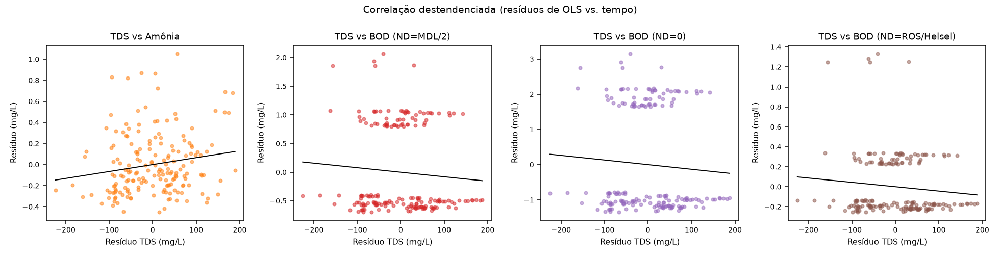
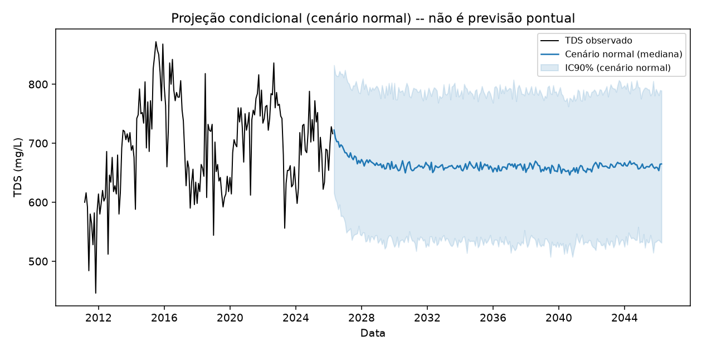

As duas perguntas secundárias: TDS prevê problema biológico? E qual número levar pra 2046?
Objetivo desta lição: responder a pergunta 3 do mapa geral (Lição 0001) com o gráfico certo, e fechar em definitivo a pergunta "então qual é o número de previsão de longo prazo?" — a resposta que substitui a extrapolação linear implausível da Lição 0004.
1. TDS vs. Amônia/BOD (Biochemical Oxygen Demand, demanda bioquímica de oxigênio) — a salinidade atrapalha o tratamento biológico?
Pergunta 3 do mapa geral (Lição 0001): salinidade elevada pode indicar estresse na comunidade biológica responsável pela nitrificação (remoção de amônia). Isso foi testado correlacionando os resíduos de TDS, Amônia e BOD contra o tempo — ou seja, depois de remover o fato de todas subirem juntas ao longo de 15 anos, o que resta é covariação mês a mês real, não coincidência de tendência comum.

Figura do artigo (resultados.tex, linha 282): "Correlação entre os resíduos (após remoção da tendência temporal) de TDS e de Amônia/BOD (três tratamentos de ND)."
Como ler este gráfico:
1. São dispersões (scatter plots) de resíduo de TDS (eixo X) contra resíduo de Amônia e de BOD (eixo Y, em painéis separados) — cada ponto é um mês, já sem a tendência de longo prazo de nenhuma das duas séries.
2. O que procurar: uma nuvem de pontos inclinada (subindo ou descendo) indica correlação real mês a mês; uma nuvem sem direção clara indica ausência de correlação residual.
3.TDS × Amônia: correlação positiva real, mesmo destendenciada (r=0,175, p=0,018) — meses com TDS acima do esperado tendem a ter amônia também acima do esperado. Consistente com a hipótese: amônia residual mais alta sugere nitrificação incompleta, e isso coincide com salinidade elevada.
4. TDS × BOD: sem correlação significativa em nenhum dos 3 tratamentos de dado não-detectado (ND) testados. Motivo registrado na Metodologia: o BOD do efluente fica rente ao limite de detecção (3,0 mg/L) em praticamente toda a série, com pouquíssima variação real — não há sinal suficiente na própria série de BOD para correlacionar com nada, independente de como se trata o ND.
Por que TDS não correlaciona significativamente com BOD em nenhum dos 3 tratamentos de ND testados?
2. Cenários climáticos — o número que substitui a extrapolação implausível
A Lição 0004 terminou com um "achado negativo, registrado e não escondido": extrapolar linearmente a carga/vazão do balanço de massa para +20 anos cruza valores fisicamente impossíveis (vazão negativa). script_21_cenarios.py resolve exatamente esse problema — substituindo a reta por uma projeção condicionada a cenários de seca, usando o PDSI histórico (processo AR(1): $\mu=-0{,}31$, $\phi=0{,}894$) e a relação já estabelecida na Lição 0003 (TDS ~ PDSI com defasagem de 4 meses).

Figura do artigo (resultados.tex, linha 445): "Projeção condicional do cenário normal (mediana + IC90%) — não é previsão pontual."
Como ler um "fan chart" (gráfico de leque):
1. A série observada aparece à esquerda, como sempre. À direita, em vez de uma única reta com uma banda, há uma mediana (linha central) com bandas de leque que se alargam — cada banda mais clara representa um percentil mais extremo das 2.000 simulações de Monte Carlo rodadas para o cenário "normal".
2. A mensagem visual do nome "fan chart": a incerteza não é um número único (como "±50 mg/L"), é uma distribuição inteira de futuros possíveis, simulada explicitamente a partir do comportamento histórico do PDSI.
3. Isso é estruturalmente diferente do IC90% simples das Lições 0005/0006: ali, o IC vem da incerteza do ajuste do modelo; aqui, vem de simular 2.000 trajetórias plausíveis de seca/umidade e ver onde o TDS resultante cai.
🔧 Como funciona: cenários climáticos (Monte Carlo sobre PDSI)
Cenários climáticos
Ajusta um processo AR(1) (média-reversível) ao PDSI histórico completo, simula 2.000 trajetórias futuras de PDSI por cenário (mudando só a média-alvo: seco/normal/úmido/agravamento), e passa cada trajetória pela regressão TDS~PDSI já estimada — gera uma distribuição inteira de futuros plausíveis, não um único número.
Figura do artigo (resultados.tex, linha 452): "Faixa de TDS por cenário climático e horizonte (mediana + IC90%)."
Cenário
+10 anos
+15 anos
+20 anos
Seco
721 [596, 852]
720 [595, 848]
718 [588, 846]
Agravamento climático
682 [561, 808]
697 [576, 826]
714 [591, 842]
Normal
663 [536, 788]
659 [533, 784]
658 [529, 783]
Úmido
597 [470, 721]
595 [470, 723]
594 [462, 721]
Fonte: Tabela \ref{tab:cenarios} do artigo (resultados.tex, linha 432). Valores: mediana [P5, P95] de TDS simulado em mg/L.
Como ler esta tabela e o gráfico de horizontes:
1. 4 linhas = 4 cenários climáticos (seco, agravamento climático, normal, úmido), cada um com sua própria trajetória assumida de PDSI futuro. 3 colunas = os 3 horizontes já conhecidos (+10/+15/+20 anos).
2. Cada célula tem 3 números: a mediana das 2.000 simulações, e entre colchetes o percentil 5 e o percentil 95 — ou seja, a própria célula já é um IC90% interno.
3. Achado notável: o cenário de "agravamento climático" converge para perto do cenário "seco" ao longo do horizonte (682→697→714, aproximando-se de 721→720→718) — esperado pelo desenho da rampa de média-alvo do PDSI nesse cenário, não um acaso.
4.Todas as faixas são fisicamente plausíveis — ao contrário da extrapolação linear da Lição 0004, que cruzava vazão negativa. É exatamente esse ganho que justifica ter construído este método adicional.
5.A frase certa para a banca, substituindo "qual é o número de 2046":"não se apresenta um valor único de TDS para 2046 — a faixa de ~590 a ~850 mg/L, condicionada ao regime climático, é a resposta honesta que os dados permitem." (citação direta do artigo). Isso não é evasão — é reconhecer que a pergunta "qual vai ser o valor exato" não tem resposta única responsável, dado que o próprio mecanismo causal (Lições 0003/0004) depende do regime de seca futuro, que é inerentemente incerto.
Por que os cenários climáticos substituem a extrapolação linear simples do balanço de massa?
Recall sem olhar: a frase de fechamento do artigo sobre a previsão de longo prazo condicionada a clima.
"Não se apresenta um valor único de TDS para 2046 — a faixa de ~590 a ~850 mg/L, condicionada ao regime climático, é a resposta honesta que os dados permitem." Compare com os ~760-800 mg/L da extrapolação de tendência bruta dos 3 finalistas (Lição 0006) — a diferença é esperada: a extrapolação de tendência bruta carrega implicitamente o efeito de vazão continuando a cair indefinidamente, enquanto os cenários limitam essa vazão a valores fisicamente plausíveis.
Ficou alguma dúvida? Pergunte ao agente (Claude Code) agora — ele pode detalhar como as 2.000 simulações de Monte Carlo são geradas a partir do AR(1) do PDSI, explicar por que o cenário "agravamento climático" converge para o "seco" e não para o "úmido", ou simular a pergunta "por que não usar Cal-Adapt RCP 8.5 (Representative Concentration Pathway, cenário de emissões do IPCC — 8.5 é o mais severo) direto em vez de simular o PDSI?" (resposta: isso é feito no script_27, método avançado de baixa prioridade — Lição 0009).